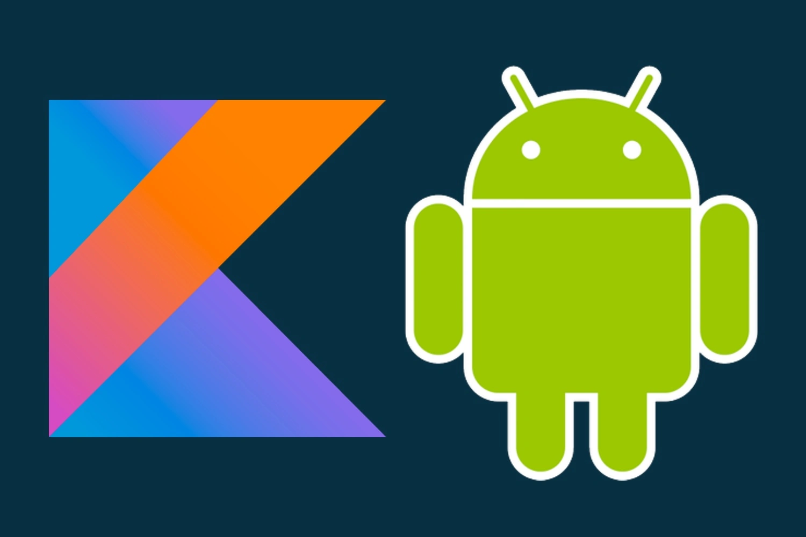

Kotlin es un lenguaje de programación de código abierto creado por JetBrains que se ha popularizado gracias a que se puede utilizar para programar aplicaciones Android. Este lenguaje es de tipado estático, ya que se puede desarrollar sobre JVM o JavaScript; o desde hace unos meses, incluso sin necesidad de ninguna de ellas, ya que paralelamente se está desarrollando en nativo con LLVM. Gracias a eso, es totalmente interoperable con código Java, lo que permite migrar de una forma gradual nuestros proyectos.
¿QUÉ ES KOTLIN?
HISTORIA DE KOTLIN
CARACTERÍSTICAS DE KOTLIN
Kotlin destaca por varias características que no solo simplifican la lectura del código sino el propio desarrollo de este. Es por ello que las ventajas de Kotlin respecto a Java a la hora de desarrollar aplicaciones móviles ha hecho que este lenguaje se haga cada vez más popular.
-
Multiplataforma
Su estructura permite que los proyectos se desarrollen en cualquier tipo de plataforma, incluyendo iOS y Android. Esto se debe a que el lenguaje se ejecuta en JVM, facilitando que se comparta el código entre plataformas.
-
Aprendizaje sencillo
La sintaxis con Kotlin es bastante sencilla, por lo que los desarrolladores novatos no tienen muchos problemas a la hora de comenzar a utilizarlo. El código abierto también juega un gran papel en este aspecto, puesto que la comunidad acostumbra a ofrecer soluciones y apoyos continuos al resto de profesionales. La optimización en los procesos de escritura de códigos es uno de los objetivos más perseguidos por parte de los desarrolladores. Kotlin se ha encargado de eliminar el código redundante, reduciendo los tiempos de programación y habilitando una comercialización más rápida de las aplicaciones.
-
Funcionalidad y orientación hacia los objetivos
Kotlin se caracteriza, también, por mostrar una orientación doble: hacia la funcionalidad y hacia los objetivos. Permite trabajar con lambdas, por lo que los desarrolladores ahorran mucho tiempo, simplificando las tareas más molestas del trabajo. Además, permite resolver los problemas en tiempo real durante el desarrollo de la programación. Si lo juntamos con la eliminación de los nulos, podemos comprender por qué es el favorito de tantos desarrolladores a la hora de trabajar en aplicaciones Android.
-
Corrutinas y flexibilidad
La programación asíncrona está totalmente optimizada gracias a las corrutinas, evitando los callbacks y simplificando el acceso a las bases de datos. Además, el sistema goza de una elevada flexibilidad, permitiendo a los desarrolladores trabajar con el estilo que más les guste.
-
Interoperable con Java
Las bases de código de Java pueden interactuar con Kotlin sin ningún tipo de inconveniente, y viceversa. Esta característica es una de las más importantes de este lenguaje de programación y, probablemente, la que lo convierte en el favorito de muchos desarrolladores. Kotlin, además, aborda varios problemas de Java (referencias nulas controladas, sin excepciones marcadas ni tipos sin procesar…), incrementando, aún más, la utilidad de este lenguaje. Además, tiene mayor seguridad que Java, por lo que se convierte en una opción excepcional para su uso.
VENTAJAS
Veamos algunos de los beneficios de utilizar Kotlin para desarrollar aplicaciones de Android:
- Compatibilidad en bibliotecas como Android Jetpack. Permite añadir funciones del lenguaje, como parámetros con nombre o lambdas, a las bibliotecas existentes, optimizando el trabajo.
- La legibilidad es buena y hay menos código, por lo que existe mayor facilidad a la hora de escribir, y también de interpretar el código de los demás desarrolladores.
- Tiene una integración completa con Android Studio, gracias a su lenguaje maduro y su ecosistema trabajado para garantizar la eficiencia al programar
- Su soporte es multiplataforma, por lo que el código se puede compartir para aplicaciones web o iOS.
CURSO GRATUITO DE KOTLIN
Si te ha encantado lo que te hemos comentado acerca de Kotlin, entonces te gustará este curso gratuito
Este es un curso para principiantes
Autor del curso:
- Nombre: Brais Moure
- Nacionalidad: Español
- Descripci√≥n: HOLA üëãüèº MI NOMBRE ES BRAIS MOURE Soy ingeniero de software desde hace más de 12 a√±os. Actualmente trabajo como freelance full-stack developer iOS y Android. Además creo contenido formativo sobre programaci√≥n y tecnolog√≠a en redes. Aqu√≠ podrás encontrar todos mis enlaces de inter√©s. ¬°Bienvenid@!: Canal de Youtube